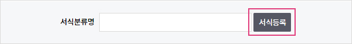
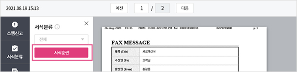

보낸팩스함에서 수신자의 핸드폰 번호가 주소록에 저장되어 있다면, 송신완료 메시지를 전송할 수
있습니다. (건당 18원) 알림 Tip
노출된 핸드폰 번호에 마우스커스를 올리면 [문자발송] 버튼으로 변경되며 송신완료 메시지를
발송할 수 있습니다.
만약 주소록에 등록되어 있지 않다면 수신번호에 마우스커서를 올려 [주소록 추가] 버튼으로 주소록에
바로 등록할 수 있습니다.
팩스 수신 및 받은팩스함은 [수신번호 신청/관리]에서 수신번호 신청 후 이용이 가능합니다.
수신번호 신청 Tip
최초 가입시에는 발신전용 번호만 부여되며, 수신번호를 별도로 신청 시
해당번호는 발신/수신이 동시에 가능한 수신번호 입니다.
팩스 수신 시 발신자의 핸드폰 번호가 주소록에 저장되어 있다면 수신완료 메시지를 보낼 수 있습니다.
(건당 18원) 알림 Tip
노출된 핸드폰 번호에 마우스커스를 올리면 [문자발송] 버튼으로 변경되며 수신완료 메시지를
발송할 수 있습니다.
만약 주소록에 등록되어 있지 않다면 발신번호에 마우스커서를 올려 [주소록 추가] 버튼으로
주소록에 바로 등록할 수 있습니다.
받은 팩스는 제목이 오지 않기 때문에 메모를 추가하여 해당팩스를 관리를 할 수 있습니다.
팩스 도착 시 [서식분류 서비스 신청]으로 수신된 팩스 문서를 분류할 수 있습니다. (무료)
도착 시 등록해 놓은 서식으로 자동분류되어 팩스관리를 효율적으로 사용하실 수 있습니다.
총 3개의 서식으로 분류 가능합니다.
(예 : 거래명세서로 해당문서를 등록하면 해당문서의 패턴을 기억하여 수신 시 서식명에
거래명세서로 표기가 됩니다.)

